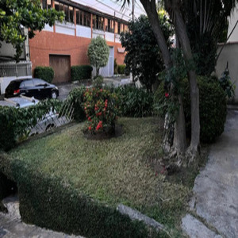
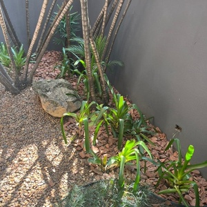
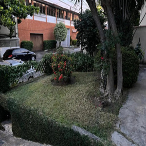
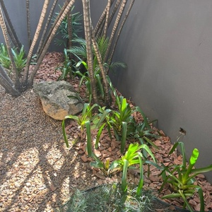

Entre em contato!
©
Historia
Imagine um espaço esquecido, com plantas doentes e um visual desanimador. Com um toque especial e muito cuidado, transformamos esse jardim em um verdadeiro oásis de paz e beleza.
 Jardineiro experiente...
Imagine um espaço esquecido, com plantas doentes e um visual desanimador. Com um toque especial e muito cuidado, transformamos esse jardim em um verdadeiro oásis de paz e beleza.
 Jardineiro experiente...